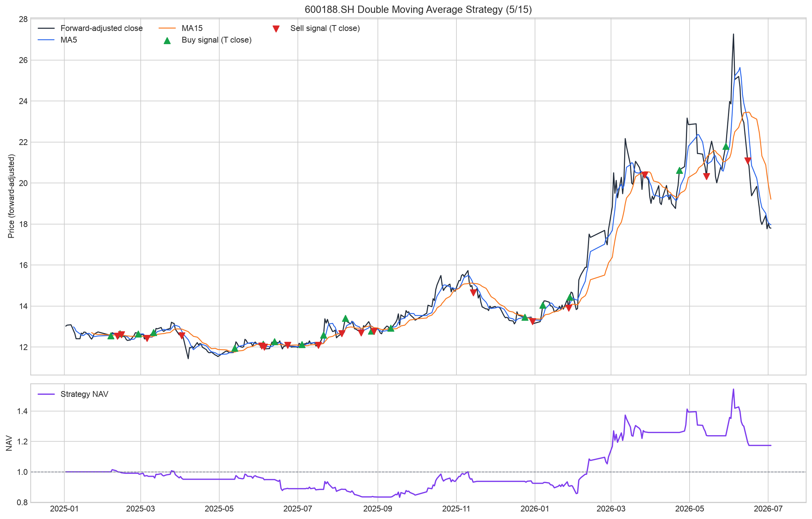
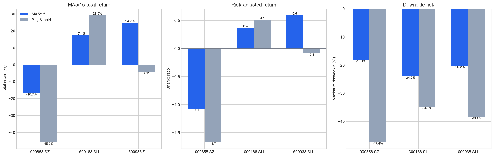
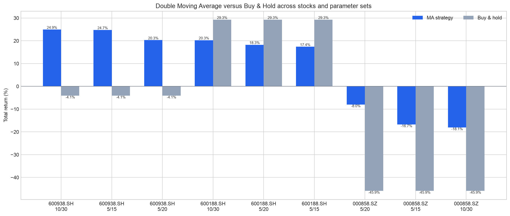

双均线策略回测报告
基于 quant_a_share_daily 本地日频数据；信号于 T 日收盘确认，模拟于 T+1 开盘成交。
主实验标的
600188.SH
均线参数
5/15
策略总收益
17.37%
Buy & Hold 收益
29.26%
策略超额收益
-11.88%
策略最大回撤
-23.99%
策略与基准口径
短均线上穿长均线产生买入信号，下穿产生卖出信号；下一交易日开盘模拟成交。模拟遵守停牌、涨跌停、100 股整手与项目成本配置。Buy & Hold 基准使用同一股票、同一数据区间和相同初始资金，在首个交易日按收盘价建仓并持有至期末；它不因均线信号换仓，按被动基准口径不计交易成本（成本为 0）。该结果仅供课程研究，不构成投资建议。
主实验可视化



主实验完整绩效评估：MA5/15 vs Buy & Hold
按 Lecture 3 的收益、风险、交易质量、综合四类指标逐项比较；日期类指标不计算差值。
收益类
| 指标 | 双均线策略 | Buy & Hold | 策略-B&H |
|---|---|---|---|
| 总收益率 | 17.37% | 29.26% | -11.88% |
| 年化收益率 | 11.80% | 19.56% | -7.76% |
风险类
| 指标 | 双均线策略 | Buy & Hold | 策略-B&H |
|---|---|---|---|
| 年化波动率 | 32.23% | 38.03% | -5.81% |
| 最大回撤 | -23.99% | -34.83% | 10.84% |
| 最大回撤起点 | 20260604 | 20260604 | N/A |
| 最大回撤终点 | 20260616 | 20260630 | N/A |
交易质量类
| 指标 | 双均线策略 | Buy & Hold | 策略-B&H |
|---|---|---|---|
| 成交笔数 | 34 | 0 | 34 |
| 已平仓交易数 | 17 | 0 | 17 |
| 胜率 | 23.53% | 0.00% | 23.53% |
| 平均盈利 | ¥116,316.22 | ¥0.00 | ¥116,316.22 |
| 平均亏损 | ¥-22,153.56 | ¥0.00 | ¥-22,153.56 |
| 盈亏比 | 5.250 | 0.000 | 5.250 |
| 单笔期望收益 | ¥10,427.57 | ¥0.00 | ¥10,427.57 |
| 佣金 | ¥6,766.56 | ¥0.00 | ¥6,766.56 |
| 印花税 | ¥8,292.95 | ¥0.00 | ¥8,292.95 |
| 过户费 | ¥329.83 | ¥0.00 | ¥329.83 |
| 总交易成本 | ¥15,389.34 | ¥0.00 | ¥15,389.34 |
综合类
| 指标 | 双均线策略 | Buy & Hold | 策略-B&H |
|---|---|---|---|
| 无风险利率 | 0.00% | 0.00% | 0.00% |
| 夏普比率 | 0.366 | 0.514 | -0.148 |
| 卡玛比率 | 0.492 | 0.562 | -0.070 |
同一策略在不同股票上的比较：MA5/15 vs Buy & Hold
下表固定使用 MA5/15，并为每个标的列出同期 Buy & Hold 的收益和风险指标；“策略-B&H”是两者总收益之差。
| 股票 | 策略收益 | 买入持有 | 策略-B&H | 策略年化 | B&H 年化 | 策略夏普 | B&H 夏普 | 策略回撤 | B&H 回撤 | 交易次数 | 胜率 | 策略成本 | B&H 成本 |
|---|---|---|---|---|---|---|---|---|---|---|---|---|---|
| 000858.SZ | -16.73% | -45.92% | 29.19% | -11.97% | -34.81% | -1.075 | -1.675 | -18.14% | -47.39% | 28 | 14.29% | ¥11,933.83 | ¥0.00 |
| 600188.SH | 17.37% | 29.26% | -11.88% | 11.80% | 19.56% | 0.366 | 0.514 | -23.99% | -34.83% | 34 | 23.53% | ¥15,389.34 | ¥0.00 |
| 600938.SH | 24.75% | -4.12% | 28.86% | 16.64% | -2.88% | 0.594 | -0.089 | -20.21% | -38.36% | 20 | 50.00% | ¥10,701.53 | ¥0.00 |
各股票的样本内最佳参数 vs Buy & Hold
此表只用于展示参数敏感性；不能将样本内最佳参数直接当作未来最优参数。Buy & Hold 作为不换仓基准保留在表中。
| 股票 | 短均线 | 长均线 | 策略总收益 | B&H 收益 | 策略-B&H | 策略年化 | B&H 年化 | 策略夏普 | B&H 夏普 | 策略回撤 | B&H 回撤 | 交易次数 |
|---|---|---|---|---|---|---|---|---|---|---|---|---|
| 000858.SZ | 5 | 20 | -7.96% | -45.92% | 37.96% | -5.61% | -34.81% | -0.499 | -1.675 | -13.67% | -47.39% | 18 |
| 600188.SH | 10 | 30 | 20.27% | 29.26% | -8.98% | 13.71% | 19.56% | 0.383 | 0.514 | -28.92% | -34.83% | 12 |
| 600938.SH | 10 | 30 | 24.93% | -4.12% | 29.05% | 16.76% | -2.88% | 0.602 | -0.089 | -15.97% | -38.36% | 12 |
多股票与参数对比：策略 vs Buy & Hold
| Stock | MA | Strategy return | B&H return | Excess | Strategy annual | B&H annual | Strategy Sharpe | B&H Sharpe | Strategy MDD | B&H MDD | Trades | Cost |
|---|---|---|---|---|---|---|---|---|---|---|---|---|
| 600938.SH | 10/30 | 24.93% | -4.12% | 29.05% | 16.76% | -2.88% | 0.602 | -0.089 | -15.97% | -38.36% | 12 | ¥5,690.59 |
| 600938.SH | 5/15 | 24.75% | -4.12% | 28.86% | 16.64% | -2.88% | 0.594 | -0.089 | -20.21% | -38.36% | 20 | ¥10,701.53 |
| 600938.SH | 5/20 | 20.29% | -4.12% | 24.40% | 13.72% | -2.88% | 0.504 | -0.089 | -16.40% | -38.36% | 18 | ¥8,827.11 |
| 600188.SH | 10/30 | 20.27% | 29.26% | -8.98% | 13.71% | 19.56% | 0.383 | 0.514 | -28.92% | -34.83% | 12 | ¥5,780.51 |
| 600188.SH | 5/20 | 18.27% | 29.26% | -10.99% | 12.39% | 19.56% | 0.377 | 0.514 | -24.35% | -34.83% | 22 | ¥10,563.62 |
| 600188.SH | 5/15 | 17.37% | 29.26% | -11.88% | 11.80% | 19.56% | 0.366 | 0.514 | -23.99% | -34.83% | 34 | ¥15,389.34 |
| 000858.SZ | 5/20 | -7.96% | -45.92% | 37.96% | -5.61% | -34.81% | -0.499 | -1.675 | -13.67% | -47.39% | 18 | ¥8,055.33 |
| 000858.SZ | 5/15 | -16.73% | -45.92% | 29.19% | -11.97% | -34.81% | -1.075 | -1.675 | -18.14% | -47.39% | 28 | ¥11,933.83 |
| 000858.SZ | 10/30 | -18.07% | -45.92% | 27.85% | -12.95% | -34.81% | -1.151 | -1.675 | -23.91% | -47.39% | 12 | ¥4,964.63 |
结论与适用场景
本次样本中，按年化收益排序的最佳组合为 600938.SH MA10/MA30；其总收益为 24.93%，但单一样本不能推导未来收益。
- 不同股票的收益分布差异明显：同样的 MA5/15 在趋势性较强标的上可能盈利，在单边下行或震荡标的上仍可能亏损。
- 双均线更适合趋势连续、波动有方向的行情；趋势拐点后才能确认信号，天然存在滞后。
- 震荡市会频繁金叉和死叉，交易成本与滑点可能侵蚀收益，应结合趋势过滤、波动过滤或更长均线。
- 参数与标的高度相关：短周期更灵敏但换手更高，长周期更稳定但反应更慢；应采用滚动样本和样本外检验。
回测使用已存储行情；企业行为、实际成交概率、盘中流动性及未来数据均可能使真实结果与模拟不同。